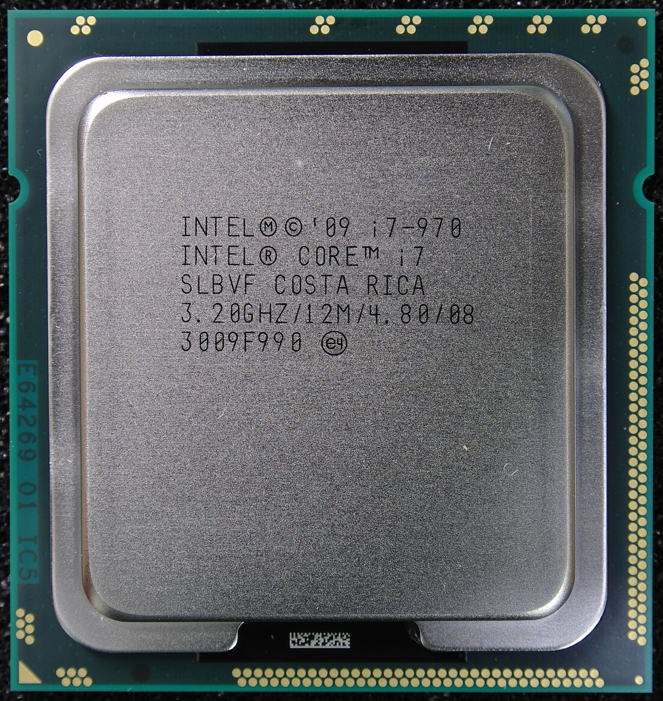
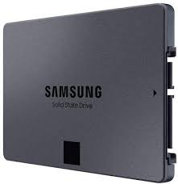
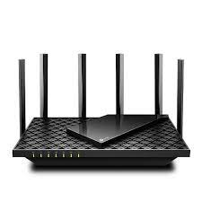
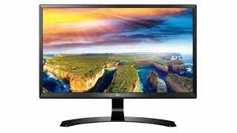

Képek
- CPU

- A CPU (angol: Central Processing Unit – központi feldolgozóegység) más néven processzor ill. mikroprocesszor, a számítógép „agya”, azon egysége, amely az utasítások értelmezését és végrehajtását vezérli, félvezetős kivitelezésű, összetett elektronikus áramkör.
- SSD

- A tartós állapotú meghajtó (más néven félvezető alapú meghajtó vagy szilárdtestmeghajtó, angol rövidítése SSD (a Solid-state drive kifejezésből)) félvezetős memóriát használó adattároló eszköz.
- Router

- Az útválasztó, forgalomirányító vagy angol kifejezéssel: router[1] a számítógép-hálózatokban egy útválasztást végző eszköz, amelynek a feladata a különböző hálózatok – például egy otthoni vagy irodai hálózat és az internet, vagy egyes országok közötti hálózatok, vagy vállalaton belüli – összekapcsolása, az azok közötti adatforgalom irányítása.
- Monitor

- A monitor a számítógép megjelenítő perifériája. A monitort VGA, DVI, HDMI vagy DisplayPort monitorkábel köti össze a videóadapterrel, mely utasításai alapján jeleníti meg a kívánt képet.